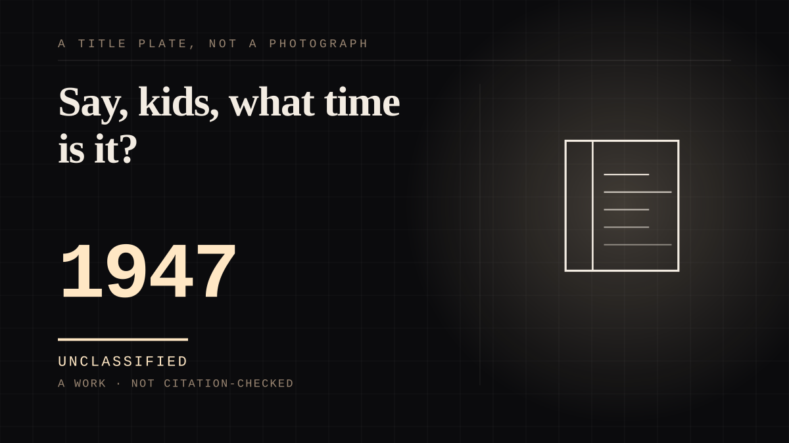

A work · 1947–1960 · Television
Say, kids, what time is it?
The first television character to be answered by name. Children three to eight shouted its name back at the screen every afternoon for thirteen years, and the puppet it was played by was recorded before the broadcast.

The template for every children's presenter since, and the purest mechanism on this site: a figure that talks to you, built by somebody else, delivered from tape. Buffalo Bob Smith first performed Howdy Doody as a radio voice; Frank Paris built a puppet to match it; when Paris left in 1948 over merchandising rights he took the original puppet with him and the replacement debuted that June. For thirteen years and some 2,500 episodes the show opened on the same transaction - 'Say, kids, what time is it?' answered, in unison, 'It's Howdy Doody time!' - which is a named individual greeted daily by name by a room of children who could not have told you who was operating him, since the voice was usually recorded before the show. Two details do more work than the format. Clarabell the Clown never spoke for twelve years, communicating with a horn and a seltzer bottle, and said his first and only line in the final episode: 'Good-bye, kids.' A silent character choosing to speak, once, at the end. And the puppet left the screen: Howdy Doody marionettes with sliding eyes and moving mouths were sold as toys throughout the 1950s, so the relationship moved from a thing you cannot touch to an object in your hands. That is the whole thesis of this site in one commercial decision, and it was made before most of the people reading it were born.
Where it sits
1900 1900-1949 · 1947 1949
Provenance · 4 source record(s)
- retrievableBroadcast on NBC from 27 December 1947 to 24 September 1960. Howdy Doody was originally only a voice performed by Buffalo Bob Smith on radio; when Smith appeared on NBC's Puppet Playhouse on 27 December 1947 the reception was great enough to demand a visual character, and puppeteer Frank Paris was asked to create the puppet.Howdy Doody. Wikipedia. ↗
- retrievableThe daily transaction, the audience, and the ending: at the beginning of every show Buffalo Bob asked his child audience in the Peanut Gallery bleachers 'Say, kids, what time is it?' and the children shouted 'It's Howdy Doody time!' Roughly 2,500 episodes aired 1947-1960. Clarabell the Clown communicated by honking a horn and squirting a seltzer bottle, and in the final episode the silent clown spoke for the first time: 'Good-bye, kids.'Howdy Doody Show. EBSCO Research Starters, History. ↗
- unverifiedThat the figure was worked by somebody the audience never saw, and from tape: throughout the NBC run 'Bob Smith voiced the puppet, usually through recordings made before the show, while Margo and Rufus Rose were primarily responsible for building, maintaining, and performing the marionettes'. Also the puppet's own instability: in 1948 a dispute over merchandising rights led Frank Paris to leave the show and take the original puppet with him, and Velma Dawson's replacement debuted on 8 June 1948 after a break for 'plastic surgery'. Publisher returns 403 to an unauthenticated request.Howdy Doody marionette. National Museum of American History, Smithsonian Institution (NMAH 670111). ↗
- unverifiedThat the figure left the screen and entered the child's hands: toy Howdy Doody puppets 'authentically costumed with sliding eyes, a moving mouth, and six-inch strings' became a popular children's toy during the 1950s, and Howdy Doody became a spokescharacter hawking sponsored products on the show and in print. Publisher returns 403.Howdy Doody toy marionette. National Museum of American History, Smithsonian Institution (NMAH 1182898). ↗
COMPANION The assistant you talk to
Connected · 2 out, 10 in
Reported as a story
It sits in